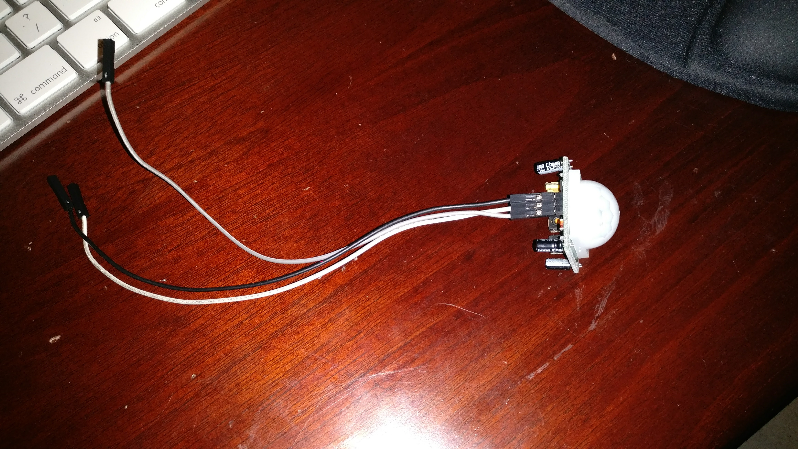
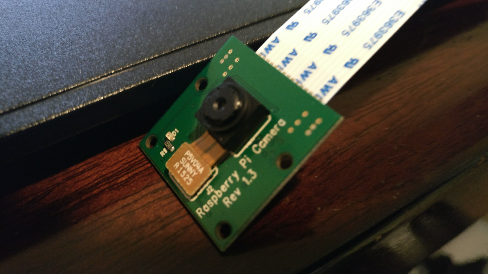
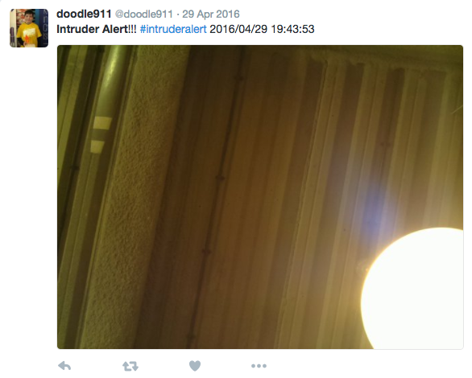

RPI Defence Turret
2016 "Fun and Games" #HackJSY Hackathon
Presentation Video
Watch it in action!
A Raspberry Pi powered defense turret that detects an intruder, shoots them with a foam dart and then tweets a photo of it all. Programmed in Pyhton. Turret was a Dreamcheeky Thunder.

Controlling the Turret
The first logical step, and the funnest, was to figure out how to control turret, a Dreamcheeky Thunder.
After some googling, I found multiple scripts to do it. Unfortunately, none of them worked.
Eventually I found the correct low-level codes that I had to transmit to the turret, I then inserted these into one of the simpler non-working scripts and Ta Daa! It works.
Here are the codes
Up - self.dev.ctrl_transfer(0x21,0x09,0,0,[0x02,0x02,0x00,0x00,0x00,0x00,0x00,0x00])
Down - self.dev.ctrl_transfer(0x21,0x09,0,0,[0x02,0x01,0x00,0x00,0x00,0x00,0x00,0x00])
Left - self.dev.ctrl_transfer(0x21,0x09,0,0,[0x02,0x04,0x00,0x00,0x00,0x00,0x00,0x00])
Right - self.dev.ctrl_transfer(0x21,0x09,0,0,[0x02,0x08,0x00,0x00,0x00,0x00,0x00,0x00])
Stop - self.dev.ctrl_transfer(0x21,0x09,0,0,[0x02,0x20,0x00,0x00,0x00,0x00,0x00,0x00])
Fire - self.dev.ctrl_transfer(0x21,0x09,0,0,[0x02,0x10,0x00,0x00,0x00,0x00,0x00,0x00])
Here is a video of me controlling the turret
Controlling the Turret
Detecting and taking a photo
Next was to make the Pi detect the intruder and take a photo. I decided to start this off in a seperate script to the turret one. Luckily, there was an official tutorial on how to do just that!
Now, this tutorial recorded video, but it was not hard to make it a photo.
Motion Sensor
RPI Camera Board
Tweeting the photo
For this task, I used Tweepy. This is a library for Python that allowed me to use twitter. It required my Twitter account to be registered as a developer which required a SIM number. It wouldn't accept Jersey SIMs, but luckily my dad had a spare UK GiffGaff SIM Card to use.
I also made a timestamp in the tweet and an intruder alert message.
One of the tweets
Disaster!
It was after this that my dad dropped the Raspberry Pi and broke the camera board and Micro SD card with all the code and the PI's OS
Luckily, the judges had seen each individual stage of the build and we had proof that it worked. So in the end, I still managed to come 2ND!
Post-Hackathon
I ordered a new SD card and camera. I wrote a script that linked all the code together, tweeting, photo-ing and shooting.
I also put it into a proper case that kept the camera and sensor facing forward.
I also added a Google Spreadsheets database, which recorded every time an intruder entered the room.